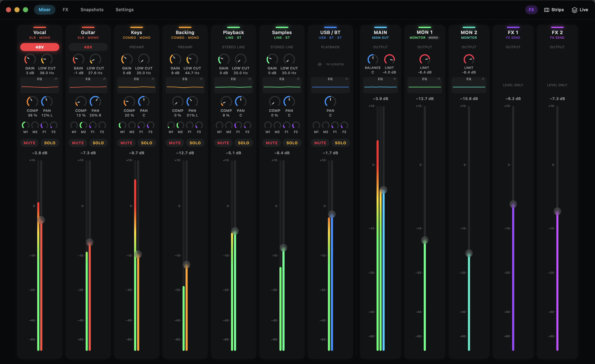
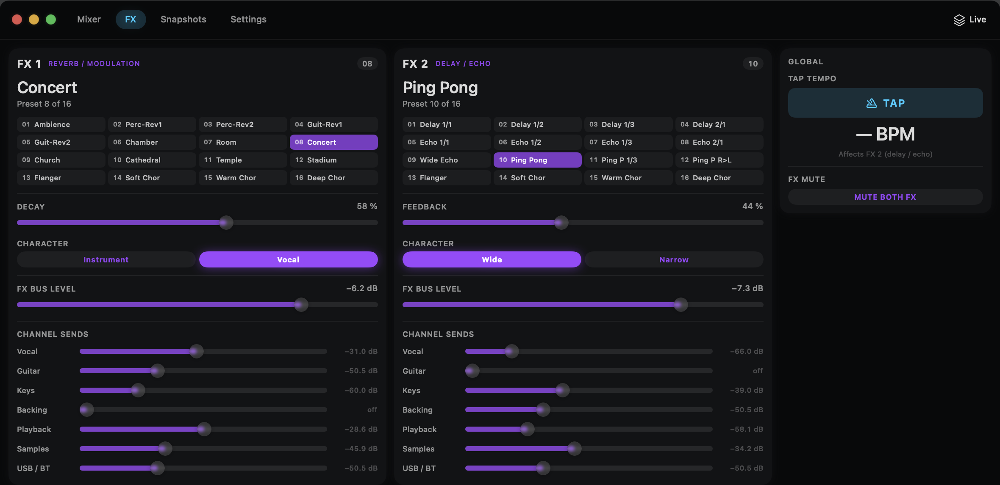
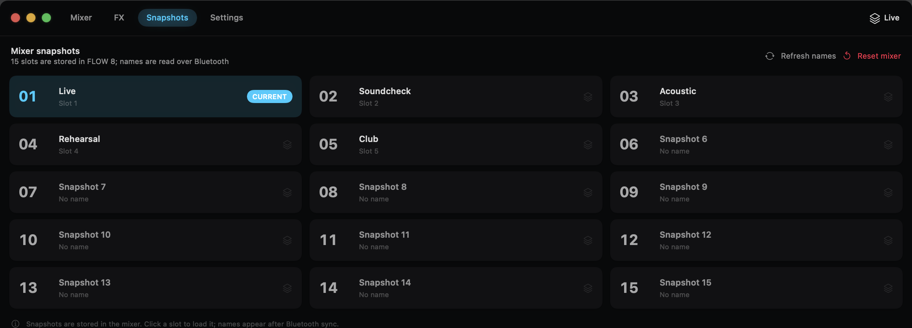

12 strips on one screen
Seven input channels and five buses, each with its fader, meters and controls.
FLOW8 connects to the FLOW 8 over Bluetooth. Every official app feature.
No MIDI or USB. macOS 14 and later. Free.

Seven input channels and five buses, each with its fader, meters and controls.
No MIDI, USB or extra cables. Connection and sync happen over the air.
16 presets with real names, a preset parameter, character and channel sends.
One-click recall, mixer reset and names read from the FLOW 8 itself.
Press EQ on any strip to open a graph and four knobs. Drag the points; double-click to reset a band.

Both FX slots, 15 snapshots and tap tempo.

Reverb, delay and modulation: 16 presets, a parameter, character and bus level.

Slots live in the mixer, names are read over Bluetooth, recall is one click.
State syncs over Bluetooth: faders, EQs, sends, mute, solo, phantom, limiters and FX presets. Hardware moves show up live.
You need macOS 14 or later and Bluetooth permission. Command Line Tools are enough.
Get the latest release on GitHub and unzip it.
Drag FLOW8.app into your Applications folder.
On first launch macOS asks for access to control the mixer and read its state.
The app is ad-hoc signed, without a Developer ID. If macOS asks you to confirm the launch, open System Settings, then Privacy & Security, then Open Anyway.